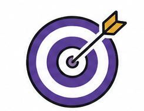
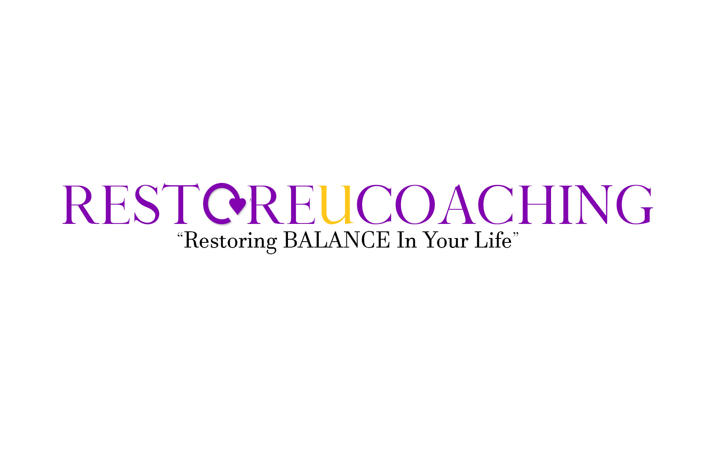
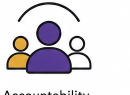

Business Clarity Intensive
Define your audience, offer, pricing, and first version of your business model.
- Clarifies your ideal client and core promise
- Shapes a simple, sellable service or product offer
- Creates a 30-day action map

Coaching for courageous small business beginnings.
RestoreUCoaching helps aspiring and early-stage small business owners clarify their vision, structure their offer, and build the practical steps needed to open with confidence.
From mindset and planning to pricing, operations, and client readiness, you get grounded support that makes entrepreneurship feel less overwhelming and more doable.
About the coaching approach
Starting a business can feel personal because it is personal. RestoreUCoaching is built for founders who have strong ideas but need help turning scattered thoughts into a focused path forward.
You will work through the foundations of business ownership with a coach who keeps the process calm, organized, and action-focused, so every session leaves you with decisions made and next steps in hand.
Services

Define your audience, offer, pricing, and first version of your business model.
Build the practical launch pieces that help you move from preparation to opening day.

Stay focused, make decisions faster, and keep momentum when business ownership gets loud.
Client stories
“I came in with a notebook full of ideas and left with an offer, price, and launch checklist. It finally felt real.”
Monique T., Wellness Studio Owner
“The coaching helped me stop second-guessing every decision. I knew what to do next after each session.”
Angela R., Mobile Notary Founder
“My business plan became less intimidating. We broke it into pieces I could complete while still working full-time.”
Jasmine P., Boutique Consultant
Booking information
Start with a complimentary 20-minute discovery call. We will talk through where you are, what you are building, and which coaching path fits your current stage.